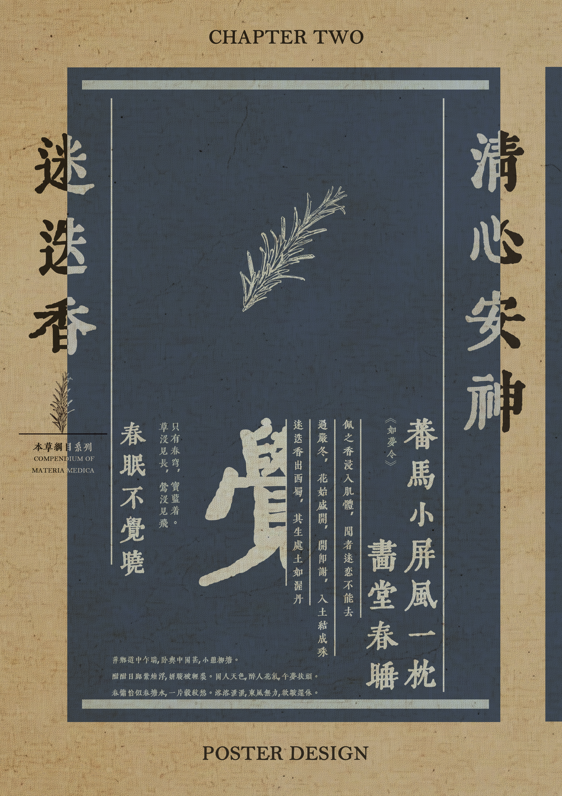
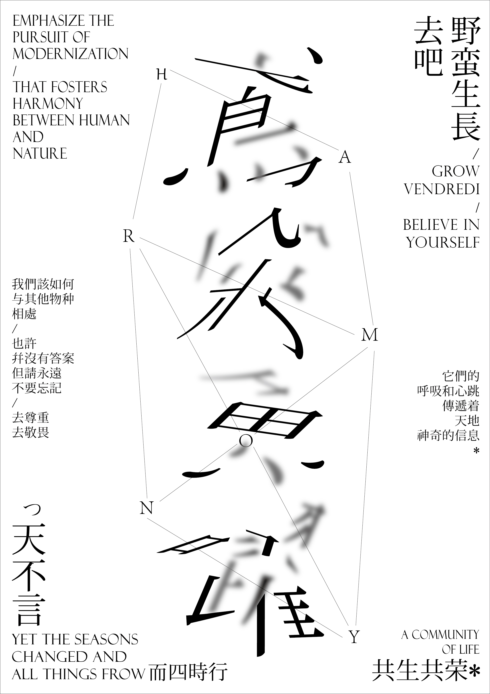
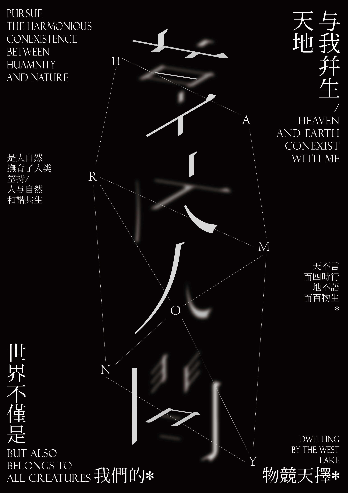
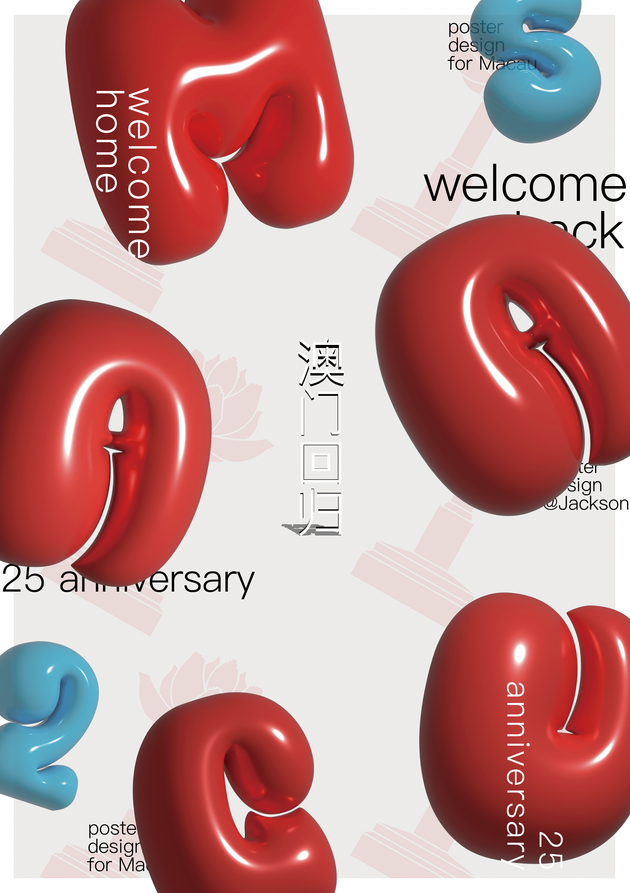
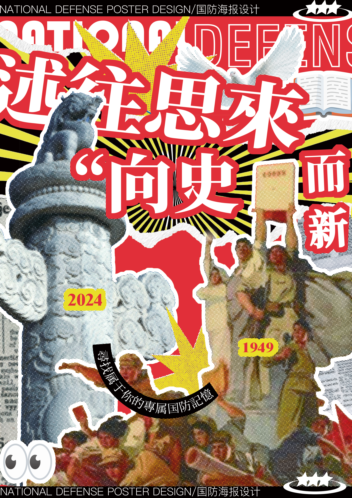
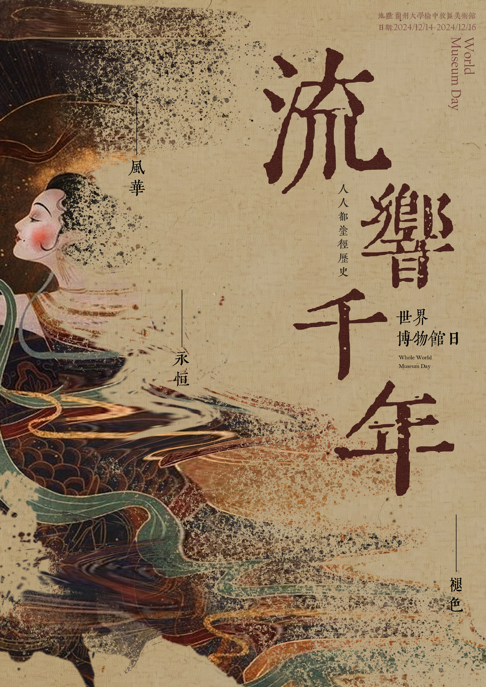
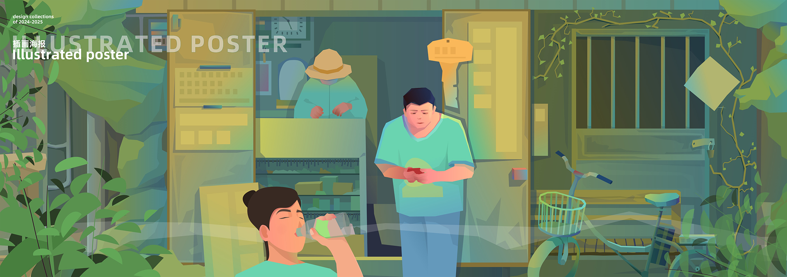
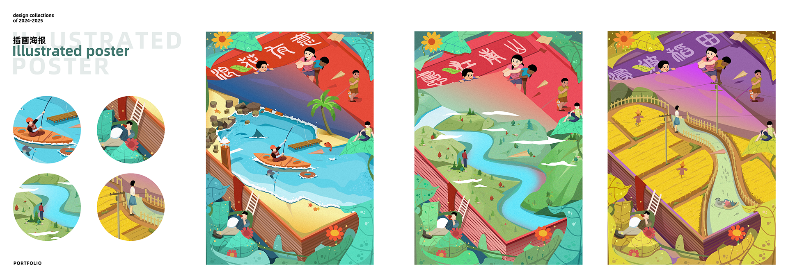

Branding / AIGC / Typography / Poster / Illustration
Creative Lab.
正式项目之外的视觉实验档案。
在风格、材质、文字与叙事之间持续练习。
这里收录了我在品牌版式、AIGC 材质、中文字体、文化主题海报与插画叙事方面的日常练习。 这些作品不完全以商业项目为导向，而是作为视觉语言、材质表现和版式节奏的持续探索。
01 / Brand & Editorial Visual
品牌视觉与版式实验
以品牌展板、文字编排与图像肌理为核心，探索品牌叙事在平面空间中的视觉展开方式。

02 / AIGC Material Experiments
AIGC 材质与物体形态实验
通过生成式图像探索物体材质、质感变化与视觉识别，包括玻璃、软糖、云朵、金属、果冻与布料等形态。

03 / Chinese Typography Poster
中文字体与东方视觉实验
围绕中文竖排、草本意象、纸张肌理与字体气质展开，尝试在传统语汇与现代平面编排之间建立视觉张力。





04 / Cultural & Public Poster
文化主题与公共议题海报
面向文化传播、公共议题与竞赛命题的主题海报练习，强调视觉冲击力、信息聚焦与情绪表达。


05 / Illustrated Poster
插画叙事海报
以场景、人物与系列化画面为主要内容，探索插画在主题视觉、空间叙事与系列传播中的应用方式。


Back to